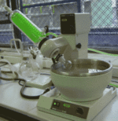

De: La Frikipedia, la enciclopedia extremadamente seria.
De: La Frikipedia, la enciclopedia extremadamente seria. De: La Frikipedia, la enciclopedia extremadamente seria.
| Laboratorio Privado En este Laboratorio se realizan investigaciones de alta complejidad y experimentos tan malotes como los que se hace Orochimaru, asi que si no eres su dueño no vayas a editar nada aquí
|
 |
Autor(es):